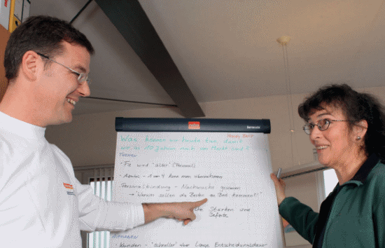
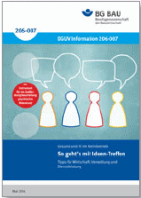
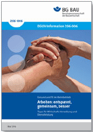
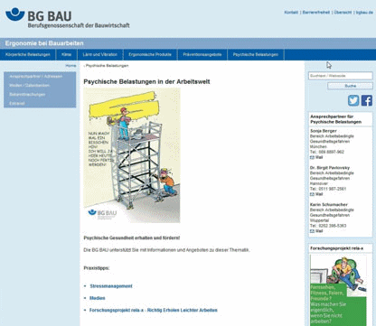
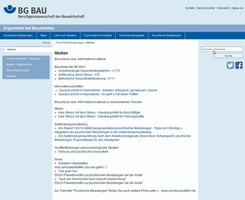

Sie wollen in Ihrem Unternehmen etwas verändern? Sie wollen die Mitarbeiter auf dem Weg mitnehmen und motivieren?
Wir haben zu diesem Thema Material zu Ihrer Unterstützung:
 |
Die Broschüre "DGUV-I 206-007 So geht’s mit Ideen-Treffen". www.dguv.de, Webcode: d125363 |
In der Broschüre finden Sie Anregungen für einen kontinuierlichen Verbesserungsprozess, bei dem Arbeitsabläufe, Produktqualität und Arbeitsschutz Schritt für Schritt verbessert werden können. Kernstück der Methode sind regelmäßige, nach einem festgelegten Muster ablaufende Besprechungen, so genannte "Ideen-Treffen", bei denen alle Beschäftigten aktiv eingebunden werden.
Die Broschüre gibt auch Tipps, wie Sie diese Ideen-Treffen für Arbeitsausschusssitzungen, eine moderierte Unterweisung oder sogar für die Gefährdungsbeurteilung psychischer Belastungen einsetzen können.

Für grundlegende Informationen zum Thema psychische Belastung bei der Arbeit und Stress empfehlen wir Ihnen die Broschüre "Arbeiten: Entspannt – gemeinsam – besser (DGUV Information 206-006).
Beide Broschüren finden Sie unter www.bgbau-medien.de – Vorschriften/Regeln – DGUV-Informationen zum Download bzw. zur kostenfreien Bestellung.
Sie wollen gemeinsam mit Ihren Beschäftigten Lösungen (er)finden, um die Abläufe zu optimieren oder die Zusammenarbeit zu verbessern? In dem Erklärfilm "Ideen-Treffen" erhalten Sie in 3 Minuten die wichtigsten Informationen um anzufangen (www.bgbau.de, Webcode: WCYzBk).


www.bgbau.de
Webcode:
3011493
Auf unseren Internetseiten "Psychische Belastungen in der Arbeitswelt" unterstützt Sie die BG BAU mit weiteren Informationen und Angeboten zu dieser Thematik.